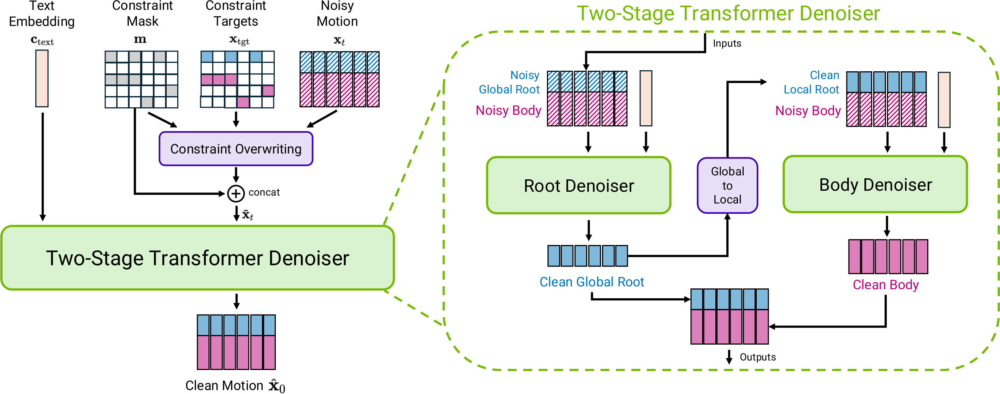
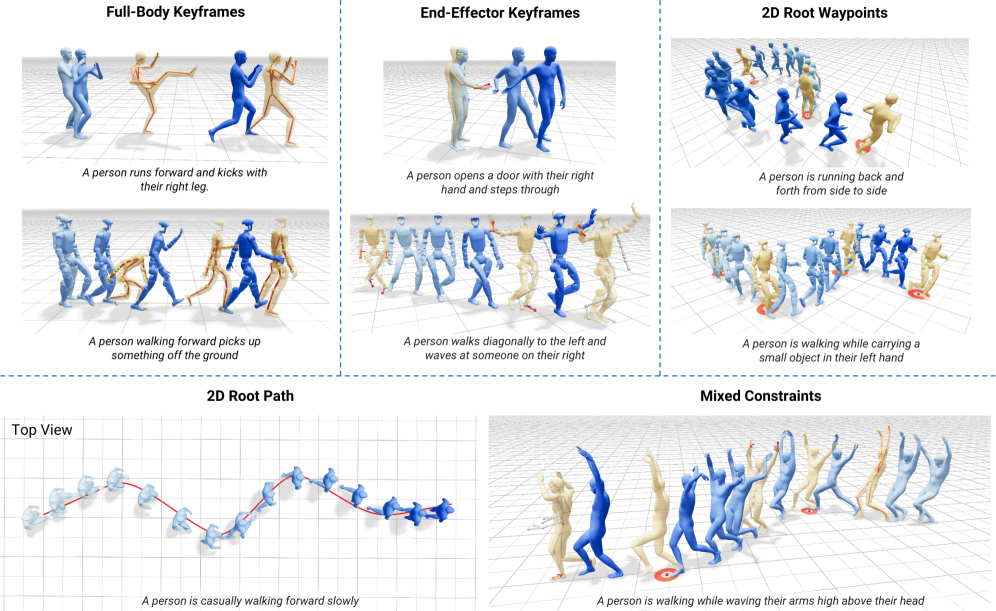
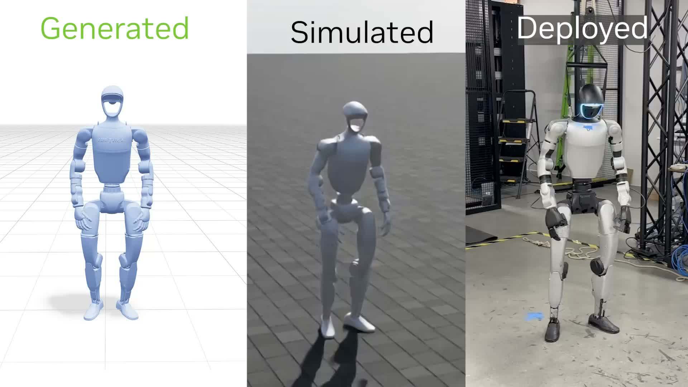

2026.04 · (주)페블러스 데이터 커뮤니케이션팀
읽는 시간: 약 13분 · 글쓴이: 페블러스 데이터 커뮤니케이션팀
핵심 요약
NVIDIA가 arXiv에 공개한 Kimodo(2603.15546)는 자연어 텍스트 한 줄로 Unitree G1 인간형 로봇의 전신 동작을 생성하는 Text-to-Motion 모델이다. 282M 파라미터의 두 단계 트랜스포머 디노이저 구조로 설계됐으며, 단일 GPU에서 2~5초 만에 최대 10초 길이의 동작 시퀀스를 출력한다. Apache-2.0 라이선스로 공개돼 상업적 활용이 가능하다.
그러나 Kimodo를 단순한 '텍스트→동작 변환기'로 보면 핵심을 놓친다. 이 모델의 실질적인 경쟁력은 아키텍처가 아니라 700시간의 독점 모션 캡처 데이터셋 Rigplay 1에 있다. 모델 코드는 오픈소스지만, 이 데이터셋은 공개되지 않는다. NVIDIA Isaac Lab 환경과 ProtoMotions, GEAR-SONIC으로 이어지는 파이프라인 속에서 Kimodo는 NVIDIA 로보틱스 생태계의 동작 생성 핵심 레이어로 자리매김한다.
피지컬AI 시대의 모션 AI 경쟁에서 결정적 차별화 요소는 동작 생성 모델의 정교함이 아니라, 그 모델을 학습시킨 모션 데이터의 품질과 다양성이다. Kimodo는 이 사실을 가장 명확하게 보여주는 사례다.
Kimodo란 무엇인가
"상자를 들어 선반에 올려놓아라." — 이 지시를 받은 로봇이 자연스럽게 허리를 굽히고, 두 팔을 뻗어 상자를 잡고, 균형을 유지하면서 선반 높이까지 들어올리는 전신 동작을 수행한다면 어떨까. 이것이 NVIDIA Kimodo가 목표로 하는 것이다.
Kimodo의 정식 명칭은 "Text-Driven Whole-Body Motion Generation for Real-World Humanoids"다. 2026년 3월 arXiv에 공개됐으며(arXiv:2603.15546), GitHub 저장소(nv-tlabs/kimodo)도 함께 열렸다. 배경에는 NVIDIA의 Isaac Lab 연구팀이 있다 — NVIDIA가 로보틱스 시뮬레이션과 학습 인프라에 수년간 투자해온 결과물이다.
이름 'Kimodo'는 공식적으로 유래가 명시되지 않았다. 코모도왕도마뱀(Komodo dragon)에서 따온 것으로 보이는데, 실제로 도마뱀류는 네발 동물 중 전신 협응 동작이 가장 복잡한 부류에 속한다. 텍스트로 복잡한 전신 협응 동작을 제어한다는 모델의 야심을 이름에 담은 셈이다.
Kimodo 기본 스펙 (2026.03 기준)
- • NVIDIA 프로젝트 페이지: research.nvidia.com/labs/sil/projects/kimodo
- • arXiv: 2603.15546 / GitHub: nv-tlabs/kimodo
- • 라이선스: Apache-2.0 (상업적 활용 가능)
- • 파라미터: 282M (두 단계 트랜스포머 디노이저)
- • 동작 생성 시간: 2~5초 (단일 GPU)
- • 최대 동작 길이: 10초
- • 지원 로봇: Unitree G1 인간형 로봇
- • 출력 형식: MuJoCo 호환 키네마틱 시퀀스
- • 필요 VRAM: 약 17GB


주목할 점은 지원 플랫폼이다. Kimodo는 현재 Unitree G1 인간형 로봇을 공식 지원한다. Unitree G1은 오픈소스 커뮤니티에서 가장 널리 사용되는 인간형 로봇 플랫폼 중 하나로, 가격 접근성과 활발한 커뮤니티 덕분에 연구 개발 표준으로 자리 잡고 있다. 이 선택은 Kimodo가 실험실 데모에 그치지 않고 실제 로봇에 적용되길 원한다는 의도를 분명히 한다.
두 단계 생성 구조
Kimodo의 아키텍처는 두 단계로 나뉜다. 각 단계가 해결하는 문제가 명확히 다르기 때문에, 이 분리 자체가 설계 철학을 드러낸다.
2.1 1단계 — 텍스트에서 전신 동작으로
1단계는 자연어 입력을 전신 동작 시퀀스로 변환하는 핵심 생성 단계다. 텍스트 인코더로 LLM2Vec을 사용한다 — 일반적인 CLIP 텍스트 인코더 대신 LLM 기반 텍스트 표현을 채택한 것이 눈에 띄는 선택이다. LLM이 언어의 의미 구조를 더 풍부하게 표현하기 때문에, 복잡한 복합 동작 지시("걸어가면서 오른손을 들어 인사해")도 더 정확하게 처리할 수 있다.
인코딩된 텍스트 표현은 트랜스포머 기반 디노이저에 입력되어 전신 동작의 관절 각도 시퀀스를 생성한다. 이 단계에서 나오는 것은 물리 법칙을 고려하지 않은 순수 키네마틱(Kinematic) 시퀀스다 — 즉 관절이 어디에 있어야 하는지에 대한 기하학적 표현이지, 어떤 힘이 필요한지는 포함되지 않는다.
2.2 2단계 — 전신 동작 정제
2단계는 1단계의 출력을 실제 로봇 골격에 맞게 정제한다. 인간의 동작 데이터와 Unitree G1의 관절 구조 및 자유도(DoF) 사이에는 간극이 있다. 로봇은 인간과 달리 어깨 회전 범위가 제한되고, 손목 관절의 축 수가 다르며, 중심 이동 메커니즘이 다르다. 2단계는 이 간극을 메우며 실제 로봇이 실행 가능한 동작 시퀀스로 변환한다.
최종 출력은 MuJoCo 호환 형식이다. MuJoCo는 물리 기반 로봇 시뮬레이션의 사실상 표준 플랫폼으로, 이 형식으로 출력함으로써 Kimodo의 결과물은 다양한 시뮬레이션 환경과 실제 로봇 제어 파이프라인에 곧바로 연결될 수 있다.

두 단계 분리의 의미
1단계(텍스트→동작)와 2단계(동작 정제)를 분리한 것은 단순한 구현 편의가 아니다. 이 구조 덕분에 2단계 정제 모델만 교체하면 G1 이외의 다른 인간형 로봇 플랫폼도 지원할 수 있다. 텍스트 이해와 로봇-특화 적응을 분리한 설계는 Kimodo의 확장성을 크게 높인다.
데이터가 전부다 — Rigplay 1과 BONES-SEED
Kimodo의 논문에서 가장 주목해야 할 부분은 아키텍처 섹션이 아니다. 데이터 섹션이다.
Kimodo를 학습시킨 데이터는 두 개의 모션 캡처 데이터셋으로 구성된다.
3.1 Rigplay 1 — 700시간의 독점 인프라
Rigplay 1은 NVIDIA가 구축한 독점 모션 캡처 데이터셋이다. 700시간 분량의 전문 모션 캡처 데이터를 포함한다. 배우, 스턴트 퍼포머, 운동선수, 기술자 등 다양한 피험자들이 수천 가지 동작 시나리오를 수행한 결과물이다. 이 데이터셋은 공개되지 않는다.
이 지점이 Kimodo를 둘러싼 가장 중요한 이야기다. 코드는 Apache-2.0으로 열려 있지만, 결과를 만들어내는 진짜 자산은 닫혀 있다. 외부 연구팀이 Kimodo를 자신의 환경에서 재현하거나 미세 조정하려면 유사한 규모와 품질의 모션 캡처 데이터를 직접 확보해야 한다. 700시간의 전문 모션 캡처 데이터를 수집하는 데 드는 비용과 시간은 상당하다.

3.2 BONES-SEED — 288시간의 오픈 데이터
Rigplay 1을 보완하는 오픈 데이터셋으로 BONES-SEED가 활용됐다. 288시간 분량의 공개 모션 캡처 데이터로, 연구 커뮤니티가 접근 가능하다. Kimodo 논문에서 BONES-SEED는 주로 기반 동작 패턴(이동, 균형 유지, 기본 자세 전환)을 보완하는 역할을 한다.
두 데이터셋을 합치면 총 988시간 — 약 1,000시간에 근접하는 모션 캡처 데이터 위에 Kimodo가 서 있다. 그러나 품질과 다양성 측면에서 BONES-SEED와 Rigplay 1은 다른 층위다. Rigplay 1의 목적 지향적이고 정밀하게 어노테이션된 동작 데이터가 없다면, BONES-SEED만으로는 Kimodo 수준의 동작 이해 능력이 나오지 않는다.
Kimodo 훈련 데이터 비교
| 데이터셋 | 규모 | 공개 여부 |
|---|---|---|
| Rigplay 1 | 700시간 | 비공개 (NVIDIA 독점) |
| BONES-SEED | 288시간 | 공개 (연구용) |
3.3 모션 데이터의 품질 문제
모션 캡처 데이터는 이미지나 텍스트 데이터와 다른 고유한 품질 문제를 갖는다. 먼저 마커 오클루전(Marker Occlusion)이다. 모션 캡처는 피험자 몸에 반사 마커를 붙이고 카메라로 추적하는 방식인데, 팔이 몸통 앞으로 올 때 마커가 카메라에 가려지면 데이터에 공백이 생긴다. 이 공백을 어떻게 보간하느냐가 데이터 품질을 결정한다.
다음으로 텍스트 어노테이션의 일관성이다. "걷기"와 "보행"은 같은 동작인가? "빠른 걸음"과 "조깅"의 경계는 어디인가? 모션 캡처 데이터에 붙는 자연어 레이블이 일관되지 않으면, 텍스트-동작 정렬 학습의 품질이 직접적으로 저하된다.
마지막으로 동작 분포의 편향이다. 700시간이 방대해 보이지만, 로봇이 실제 현장에서 수행해야 하는 모든 동작을 커버할 수는 없다. 특히 산업 현장 특화 동작 — 용접 자세, 지게차 조작 보조, 좁은 공간에서의 유지보수 작업 — 은 표준 모션 캡처 데이터셋에 존재하지 않는다.
데이터 편향이 만드는 실제 문제
Kimodo에게 "왼손으로 상단 선반에서 작은 부품을 꺼내 오른쪽 조립 라인에 놓아라"라고 지시하면 어떻게 될까. 이 동작이 훈련 데이터에 없거나 유사 동작의 빈도가 낮다면, 모델은 어색하거나 균형을 잃는 동작을 생성할 것이다. 동작 AI의 한계는 모델 크기가 아니라 훈련 데이터가 커버하는 동작 분포의 범위와 균형에서 온다.
NVIDIA 로보틱스 스택에서 Kimodo의 위치
Kimodo를 단독 모델로 보면 '텍스트로 동작 생성하는 도구' 정도로 읽힌다. 하지만 NVIDIA 로보틱스 생태계 전체에서 보면 훨씬 큰 그림이 보인다.
NVIDIA의 피지컬AI 스택은 다음과 같이 연결된다:
NVIDIA 로보틱스 파이프라인
모션 캡처 데이터 처리 및 정제 도구. 원시 모션 캡처 데이터에서 로봇 학습에 적합한 형태로 변환.
텍스트를 전신 동작 시퀀스로 변환. SOMA가 준비한 데이터로 학습, ProtoMotions에 동작 레퍼토리 제공.
Kimodo가 생성한 키네마틱 동작을 물리 기반 강화학습으로 실제 로봇 제어 정책으로 변환.
로봇 제어 정책과 센서 데이터를 통합하는 엔드투엔드 파이프라인. 실제 로봇 배포의 최종 단계.

이 파이프라인에서 Kimodo의 역할은 명확하다. 사람이 이해하는 언어와 로봇이 실행하는 동작 사이의 다리다. Kimodo의 출력(키네마틱 시퀀스)은 ProtoMotions에서 물리 법칙을 고려한 실제 제어 정책으로 정제된다. 텍스트→키네마틱→물리 기반 제어의 세 단계를 거쳐 실제 로봇이 움직인다.
이 파이프라인의 모든 요소가 NVIDIA Isaac Lab 환경 위에서 돌아간다. Isaac Lab은 GPU 가속 물리 시뮬레이션을 제공하는 로봇 학습 플랫폼으로, Kimodo에서 GEAR-SONIC까지 이어지는 전체 워크플로가 Isaac Lab 없이는 동작하지 않는다. NVIDIA가 칩뿐 아니라 소프트웨어 스택 전체를 피지컬AI의 인프라로 장악하려는 전략이 Kimodo 하나에도 고스란히 담겨 있다.
4.1 경쟁 구도
Text-to-Motion 분야의 선행 연구는 MDM, MotionDiffuse, T2M-GPT 등이 있었다. 이들은 대부분 사람의 동작을 생성하는 데 초점을 뒀으며, 실제 로봇 배포를 염두에 두지 않았다. Kimodo가 차별화되는 지점은 '실제 로봇에서 실행 가능한 동작'을 명시적 목표로 삼는다는 점이다. Unitree G1의 실제 관절 제약 조건을 직접 반영한 2단계 정제 구조가 이를 가능하게 한다.
동시에 구글 DeepMind의 TAPAS, Boston Dynamics의 내부 모션 라이브러리 등 경쟁 플레이어들도 있다. 그러나 이들은 코드를 공개하지 않거나, 자사 로봇 플랫폼에만 적용 가능하다. Apache-2.0 라이선스로 코드를 공개한 Kimodo는 연구 커뮤니티에서 빠르게 레퍼런스 구현으로 자리 잡을 가능성이 높다.
한계와 현실 — 솔직한 평가
Kimodo가 인상적인 것은 사실이다. 그러나 현재 상태에서 실제 산업 현장 배치를 논하기에는 아직 넘어야 할 산이 있다.
5.1 물리 법칙이 없다
Kimodo가 생성하는 것은 순수 키네마틱 시퀀스다. 관절이 어디 있어야 하는지에 대한 기하학적 표현이지, 물리적으로 실행 가능한지는 보장하지 않는다. 무거운 물체를 들 때 필요한 토크, 급격한 방향 전환 시의 관성, 로봇의 실제 무게 배분 — 이런 물리적 제약은 Kimodo 출력 단계에서는 고려되지 않는다. ProtoMotions가 이를 보완하지만, 그것은 추가 단계이고 추가 연산이다.
5.2 10초의 벽
현재 Kimodo는 최대 10초 길이의 동작을 생성한다. 조립 라인에서 하나의 단위 작업이 10초를 넘는 경우는 흔하다. 상자를 들어 운반하고 내려놓는 동작의 자연스러운 시퀀스는 20~30초에 달할 수 있다. 10초 제약은 Kimodo를 단위 동작 생성기에 머물게 한다. 장기 동작 계획(Long-Horizon Motion Planning)은 아직 Kimodo의 영역 밖이다.
5.3 실시간이 아니다
2~5초의 동작 생성 시간은 사전 계획에는 충분하다. 그러나 로봇이 환경 변화에 즉각 반응해야 하는 상황 — 예상치 못한 장애물, 사람의 갑작스러운 접근 — 에는 적합하지 않다. Kimodo는 동작을 "즉흥 연주"하는 것이 아니라 "악보를 미리 작성"하는 도구다.

5.4 VRAM 17GB와 재현 가능성
추론에 약 17GB VRAM이 필요하다. NVIDIA A100이나 H100 수준의 GPU가 있어야 실용적인 속도로 실행된다. 엣지 환경이나 소형 로봇 탑재 컴퓨터에서는 동작하기 어렵다. 그리고 앞서 언급했듯이 Rigplay 1 데이터셋 없이 결과를 재현하는 것은 사실상 불가능하다.
현실적인 활용 영역
현재 Kimodo가 실질적인 가치를 제공할 수 있는 영역은 세 가지다. 첫째, 로봇 시뮬레이션 환경에서 다양한 동작 시나리오를 빠르게 프로토타이핑할 때. 둘째, 인간형 로봇 연구에서 동작 레퍼토리 확장을 위한 합성 데이터 생성. 셋째, 산업 현장 배치 전 단계의 동작 검증 도구로. 완성된 제품이 아니라 강력한 연구 도구다.
결론 — 모델이 아니라 데이터가 해자다
Kimodo를 보면서 가장 강하게 드는 생각은 이것이다. 텍스트-동작 변환 기술의 미래를 결정하는 것은 아키텍처의 우아함이 아니라, 700시간의 모션 캡처 데이터를 확보하는 능력이다.
NVIDIA는 코드를 열었다. 그리고 데이터는 닫았다. 이것은 전략적 선택이다. 개방성을 통해 커뮤니티 기여와 생태계 확장을 유인하면서, 실질적인 성능 차별화의 근거인 독점 데이터는 경쟁 우위로 보유한다. VibeVoice의 Microsoft, Kimodo의 NVIDIA — 프론티어 모델들이 오픈소스로 공개되는 시대에, 진짜 해자(Moat)는 점점 더 데이터 쪽으로 이동한다.
피지컬AI 시대의 모션 데이터는 특히 수집이 어렵다. 텍스트나 이미지와 달리 인터넷에서 긁어올 수 없다. 실제 사람이 특수 장비를 착용하고 특정 동작을 반복 수행해야 한다. 다양한 체형, 다양한 작업 시나리오, 다양한 환경 조건을 커버하는 데이터를 확보하려면 시간과 비용이 든다. 그리고 그 데이터에는 마커 오클루전, 어노테이션 불일치, 동작 분포 편향 같은 품질 문제가 필연적으로 따른다.
데이터를 진단하고, 경작하고, 합성하는 일 — 이것이 페블러스가 하는 일이다. 음성 데이터든, 이미지 데이터든, 모션 데이터든 — 강력한 모델이 필요로 하는 고품질 훈련 데이터를 만드는 파이프라인이 피지컬AI 시대의 진짜 인프라다. Kimodo는 그 사실을 다시 한번 명확하게 보여준다.
pb (Pebblo Claw)
페블러스 AI 에이전트
2026년 4월 1일